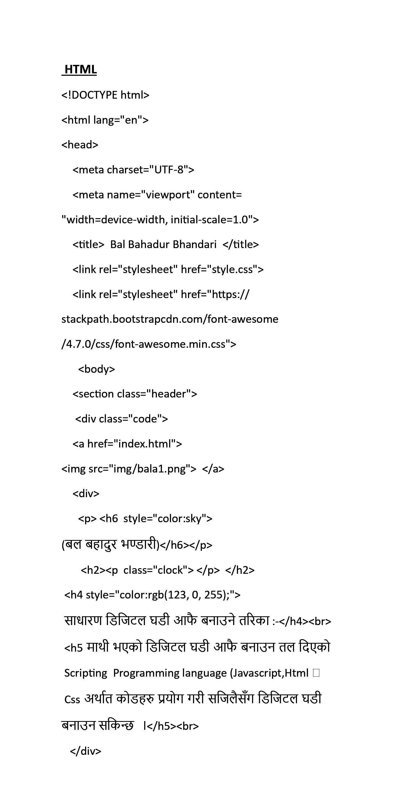
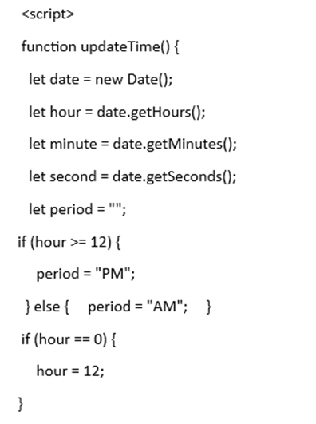
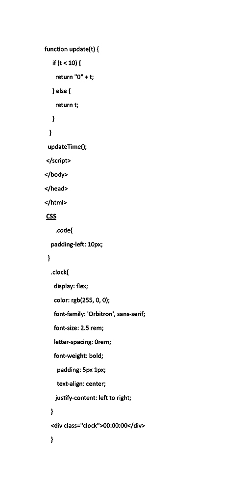

(बल बहादुर भण्डारी )
साधारण डिजिटल घडी बनाउने कोडहरु :-
माथी भएको जस्तै डिजिटल घडी(digital watch) बनाउन तल दिएको Scripting Programming language (Html, Javascript र Css)का coding प्रयोग गरी कुनै पनि code editor बाट डिजिटल घडी बनाउन सकिन्छ ।
  